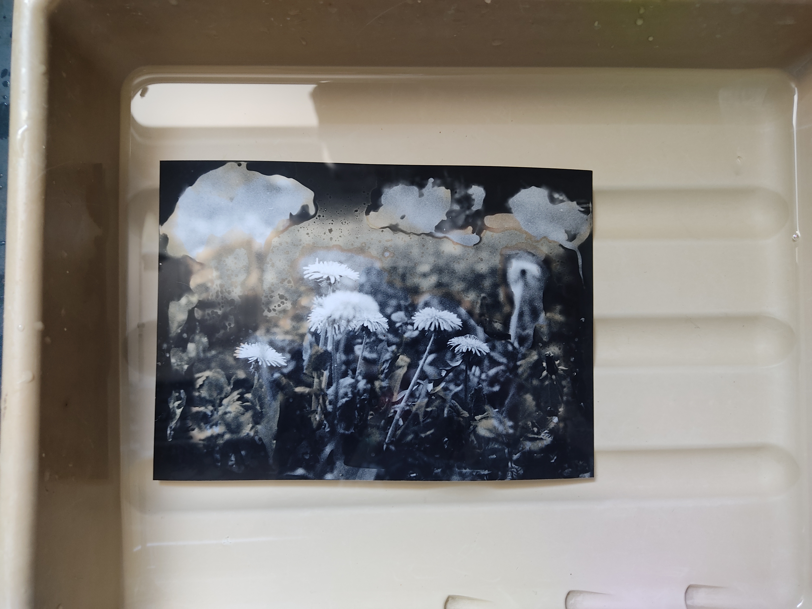
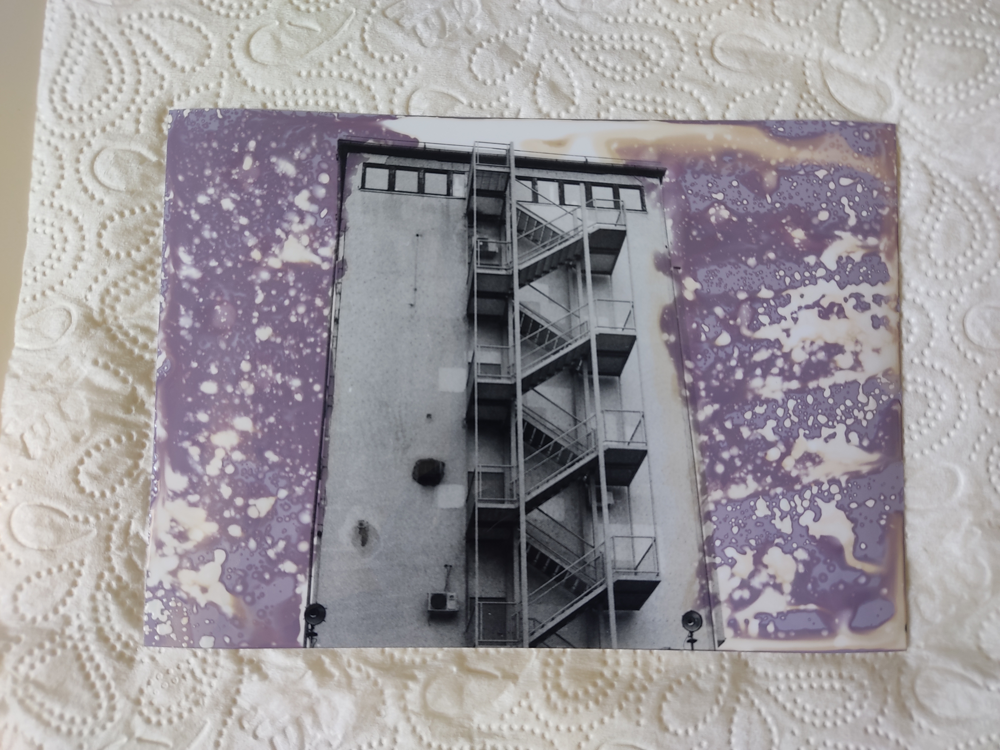
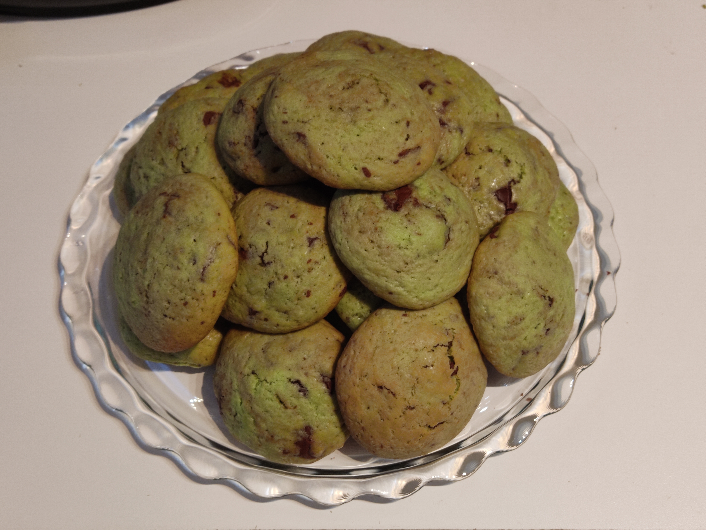
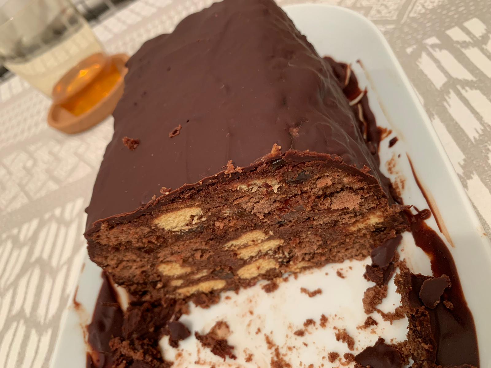

Homepage
O Meni
Studentica sam Grafičkog fakulteta na Sveučilištu u Zagrebu, a prethodno sam dvije godine studirala na Arhitektonskom fakultetu istog Sveučilišta.
Osim dizajna i uobičajenih vrsta umjetnosti, uz arhitekturu, zanimam se i za glazbu, fotografiju, knjige i mnogo toga.
Fotografija
Kod fotografije me najviše zanima crno-bijela fotografija jer se odlikuje po svojem korištenju sjena za bolji
prikaz dojma slike. Od malih nogu sam bila svijesna da me fotografija privlači, ali sam se tome uistinu posvetila
na kolegiju Fotografski procesi. Nakon zadatka koji smo dobili od profesorice, počela sam raditi antotipije
i kod kuće uz ovaj video koji mi je pomogao. Također, tek sam sad saznala koliko se zanimljivih efekata na fotografiji može
postići u laboratoriju, a ovdje su fotografije mojeg i koleginog kemograma.


moj kemogram u procesu finalnog razvijanja
Kristijanov kemogram netom nakon izlaganja svijetlu
Tijekom ovog semestra razvila sam želju da fotografiram više u svoje slobodno vrijeme te se koristim digitalnim
i analognim fotoaparatima. Imala sam sreće pa mi je tata darovao svoj analogni fotoaparat o kojem sam snimila video reklamu.
Knjige
Jedna od aktivnosti koju volim raditi u slobodno vrijeme je čitanje. Najčešće se izgubim u horor i sci-fi
romanima te kratkim pričama, pogotovo Stephena Kinga i Edgara Allana Poea. Preferiram fizičke knjige u odnosu na digitalne iako digitalno
čitam mange.

knjižnica u gradu Pordenoneu
Jezici
Od prvog razreda osnovne škole učim njemački jezik, a od četvrtog engleski te su me jezici zanimali od malih nogu. Unatoč tome
nisam završila jezičnu gimnaziju kako sam htjela. Zbog toga se izvan redovne nastave nalazim s profrsoricom i još nekoliko
studenata kako bismo nadopunili znanje njemačkog koje bi nam svima dobro došlo. Osim toga s mlađom sestrom pohađam tečaj
japanskog jezika u školi stranih jezika ponedjeljkom. Po završetku tečaja i kad položim ispit, imat ću službenu potvrdu za
poznavanje japanskog.

Kolači
Za kraj sam odlučila spomenuti svoje novo zanimanje za izradu kolača koje se ponajviše svidjelo mojim ukućanima
jer uživaju u svim uspjelim pokušajima da nešto pripremim. Volim se zatvoriti u kuhinju na nekoliko sati i pusiti glazbu na
svojem gramofonu, uglavnom slušajući The Beatles i The Doors ploče. Tako se odmorim od svega i posvetim glazbi
i kolačima, a na kraju još i dobijem ukusan plod svojeg rada.



zeleni keksi za Dan Sv. Patrika
keksi za Božić
kolač za sestrin rođendan
Povratak na početak stranice